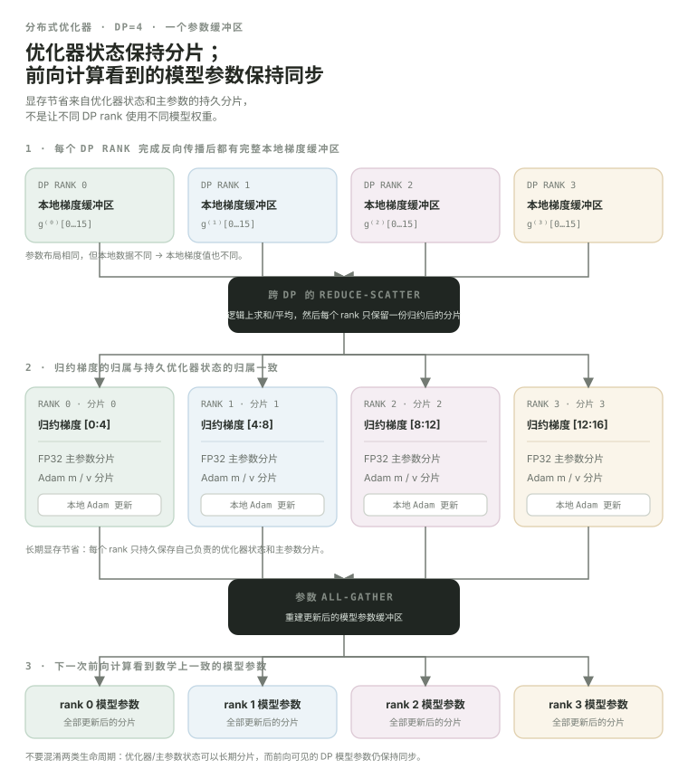

Distributed Optimizer：Data Parallel 为什么还要把 optimizer states 再切一遍？
Data Parallel 的基本逻辑是“每个 replica 看不同数据，但最终保持同一套模型参数”。最直接的实现会让每个 Data Parallel (DP，数据并行) rank 都保存一整份 gradients、Adam states、32-bit Floating Point (FP32，32 位浮点) main parameters 等训练状态。问题是：这些状态很大，而且不同 DP ranks 上大量重复。Megatron Distributed Optimizer 就从这里下手——让 DP ranks 分工保存和更新 optimizer state。
- 解释普通 Data Parallel 为什么会复制 optimizer states。
- 理解 Distributed Optimizer 与 Tensor Parallel 的差别：前者沿 DP replicas 分训练状态，后者沿 Tensor Parallel (TP，张量并行) group 分模型计算。
- 看懂 gradient reduce-scatter → local optimizer step → parameter all-gather 这条主数据流。
- 理解为什么 Megatron 会使用 contiguous parameter / gradient buffers 和 buckets。
- 知道
--overlap-grad-reduce与--overlap-param-gather分别在隐藏哪段通信。 - 理解“省多少显存”取决于 dtype 和 DP size，不能简单记成一个固定倍数。
四个 DP ranks，如果每张卡都保存同样的 Adam 状态，就有四份重复。
先把 TP/Pipeline Parallel (PP，流水线并行) 暂时忘掉。假设现在只是 DP=4，而且每个 rank 都有相同模型副本：
这些 replicas 必须在数学上更新到相同模型，但这不意味着每个 rank 都必须永久保存每个参数对应的全部 optimizer state。只要训练过程能在需要时把结果同步回来，就可以把“更新所有参数”的工作按 DP ranks 分掉。
Distributed Optimizer 的问题域是 DP。它不是替代 TP/PP，而是在已经存在的 data-parallel replica 维度上减少训练状态重复。
DP=4：每个 rank 只负责大约四分之一参数范围的 optimizer state 与更新。
optimizer state for params 0…¼optimizer state for params ¼…½optimizer state for params ½…¾optimizer state for params ¾…1每个 rank 在 backward 时仍会产生自己数据对应的 local gradients。但对于参数 shard 0，最终只需要 rank 0 持有“所有 DP ranks 聚合后的 shard-0 gradient”，然后 rank 0 用自己的 Adam state 更新这一段参数。
于是我们马上需要一个你已经学过的 collective：reduce-scatter。
关键不是“少存几份 Adam”，而是一次完整的 ownership 转移：full local gradients → reduced shards → local update → synchronized model params。
下面沿用 NVIDIA 当前文档里的 16-element / DP=4 教学尺度。每个 rank 从自己的数据得到完整 local gradient buffer；reduce-scatter 后，每个 rank 只拥有四个已经跨 DP 聚合的 gradient elements；它只更新自己的 FP32 main-param / Adam shard，最后再 all-gather 回下一轮 forward 使用的模型参数 buffer。

这条链把之前几个模块真正串起来了：autograd 产生 gradients；DP collective 改变 gradient ownership；optimizer 在本地 shard 上更新；参数同步后下一轮 forward 才能继续。Megatron 再用 contiguous buffers、buckets 和 overlap 尽量把这两次通信隐藏进计算。
普通 DP 想让每张卡拿完整 gradient；Distributed Optimizer 只需要每张卡拿自己负责的 gradient shard。
Megatron Core 当前 DistributedDataParallelConfig 的 use_distributed_optimizer 源码说明仍然明确：启用时用 reduce-scatter 聚合 gradients；否则走 all-reduce。当前同一个配置里也仍保留 overlap_grad_reduce 与 overlap_param_gather。
use_distributed_optimizer、overlap_grad_reduce、overlap_param_gather 都是当前配置项。不要背“除以 DP”这么一句，因为并不是所有 bytes 都能同样分片。
官方当前 Distributed Optimizer 文档给了按参数 dtype / gradient dtype 区分的理论账本。设 data-parallel size 为 d：
4 + 16/d6 + 12/d8 + 8/d例如 BF16 + FP32 grads、DP=4 时，理论主模型状态从 18 B/param 降到 6 + 12/4 = 9 B/param。DP 越大，shardable optimizer 部分越薄；但那几个不随 d 消失的常驻部分仍然存在。
这些是官方实现模型下的理论数字，不等于 nvidia-smi 最终峰值。activation、temporary buffers、fragmentation、communication workspace、模型特殊参数等都还在账本里。
4+16/d、6+12/d、8+8/d 三条 distributed 理论公式。几十亿个参数不适合一个 tensor 发一次 collective：Megatron 把它们整理进连续 buffers，再按 bucket 通信。
真实模型有成千上万个 parameter tensors。如果每个小 tensor gradient 一 ready 就单独发一个 NVIDIA Collective Communications Library (NCCL，NVIDIA 集体通信库) collective，latency / launch overhead 会非常糟糕。Megatron 使用 contiguous parameter / gradient buffers，并把其中区间组织成 buckets。
这样做有两个系统收益：第一，大块连续通信通常比大量 tiny collectives 更容易获得带宽；第二，某个 bucket 的 gradients 一旦全部 ready，就可以提前启动 reduce-scatter，不必等整个 backward 完成。
start_grad_sync()、start_param_sync()、finish_param_sync() 等接口。后面的 layer 还在 backward 时，前面已经 ready 的 gradient bucket 可以开始通信。
图不是精确 Megatron timeline，只表达目标：通信和独立的 backward General Matrix Multiply (GEMM，通用矩阵乘法) 同时占用不同资源，让 wall-clock 中“纯等待通信”的部分变少。对应当前参数就是 --overlap-grad-reduce。
Overlap ≠ 通信免费。如果计算与通信争抢相同瓶颈、bucket 划分不合适、网络太慢，overlap 可能隐藏不了全部通信，甚至带来额外干扰。
optimizer step 更新完参数 shards 后，下一轮 forward 不必先停下来等“全模型 gather 完”。
Distributed Optimizer 的另一个通信方向是 updated parameter all-gather。Megatron 可以把 parameter buffers 分 bucket，并在 forward 即将需要某一层参数之前预取/启动对应 all-gather。
当前配置项 --overlap-param-gather 的语义就是把 parameter all-gather 与 forward compute overlap。当前 optimizer config 里也仍存在 overlap_param_gather_with_optimizer_step，用于进一步把 parameter-gather 工作与 optimizer step 重叠。
use_distributed_optimizer 与 overlap_param_gather_with_optimizer_step。TP 和 Distributed Optimizer 都在“shard”，但 shard 的对象和执行时机完全不同。
因此它们可以组合：一个 rank 先属于某个 TP shard，再在“相同 TP/PP 位置的不同 data replicas”之间形成 DP group；Distributed Optimizer 正是在这个 DP group 上工作。
读源码时，沿“buffer → DDP sync → optimizer”三层走。
core/distributed/...use_distributed_optimizer、grad/param overlap 开关。core/distributed/param_and_grad_buffer.pycontiguous buffers、buckets、grad reduce 与 param gather 生命周期。megatron/core/optimizer/distributed optimizer wrappers、main params、optimizer states 与 update。optimizer_config.pyprecision、optimizer、distributed optimizer、offload/overlap 等配置。现在你再看到 start_grad_sync()，脑子里应该不是“一个函数”，而是“某个 buffer bucket 的 gradient 已 ready，可以启动 DP all-reduce/reduce-scatter”；看到 start_param_sync()，则应该想到下一段 forward 所需参数正在 all-gather。
确认你能从 DP 冗余自己推导这套设计。
--overlap-grad-reduce 真正想隐藏什么？现在把这节课的数据流亲手跑一遍。
先用小规模 reference 验证 correctness 与依赖关系；真实性能结论仍以对应硬件与通信栈实测为准。
Lab A4 · Mini Distributed Optimizer
验证 reduce-scatter → local optimizer shard update → parameter all-gather 的 ownership 转移。 打开实验 →
本课出现的缩写与术语
第一次在正文使用时采用 English Full Name (ABBR，中文名)；这里集中复习，避免学习时来回跳总站 Glossary。
| 缩写 | English full name | 中文名 | 本课怎么理解 |
|---|---|---|---|
DP | Data Parallel | 数据并行 | 不同 replica 处理不同数据，再同步训练状态；它主要切数据而不是切单层模型。 |
FP32 | 32-bit Floating Point | 32 位浮点 | 常见高精度浮点格式，元素通常占 4 bytes。 |
TP | Tensor Parallel | 张量并行 | 把单层内部的大矩阵/计算沿张量维度分到多个 ranks。 |
PP | Pipeline Parallel | 流水线并行 | 沿模型深度切成多个 pipeline stages，并用 microbatch 流水。 |
API | Application Programming Interface | 应用程序编程接口 | 软件组件之间约定的调用接口；源码阅读时先看 contract，再看实现。 |
FP16 | 16-bit Floating Point | 16 位浮点 | 半精度浮点格式，常用于降低显存与提升矩阵计算吞吐。 |
BF16 | Brain Floating Point 16 | BF16 16 位浮点 | 与 FP16 同为 16 位，但指数范围更接近 FP32，训练中很常见。 |
NCCL | NVIDIA Collective Communications Library | NVIDIA 集体通信库 | GPU 集群中常用的 collective / P2P 通信软件库。 |
RS | Reduce-Scatter | 归约分散 | 先做 reduction，再让每个 rank 只保留一个 reduced shard。 |
GEMM | General Matrix Multiply | 通用矩阵乘法 | Linear、MLP 等大量计算最终会落到的矩阵乘核心操作。 |
AG | All-Gather | 全收集 | 把各 rank 的 shard 收集成完整结果并让参与者获得。 |
DDP | Distributed Data Parallel | 分布式数据并行 | PyTorch 常用的数据并行训练方式，每个 rank 通常持有模型副本并同步梯度。 |
GPU | Graphics Processing Unit | 图形处理器 | 大模型训练与推理中执行 GEMM、Attention 等高并行计算的主要设备。 |